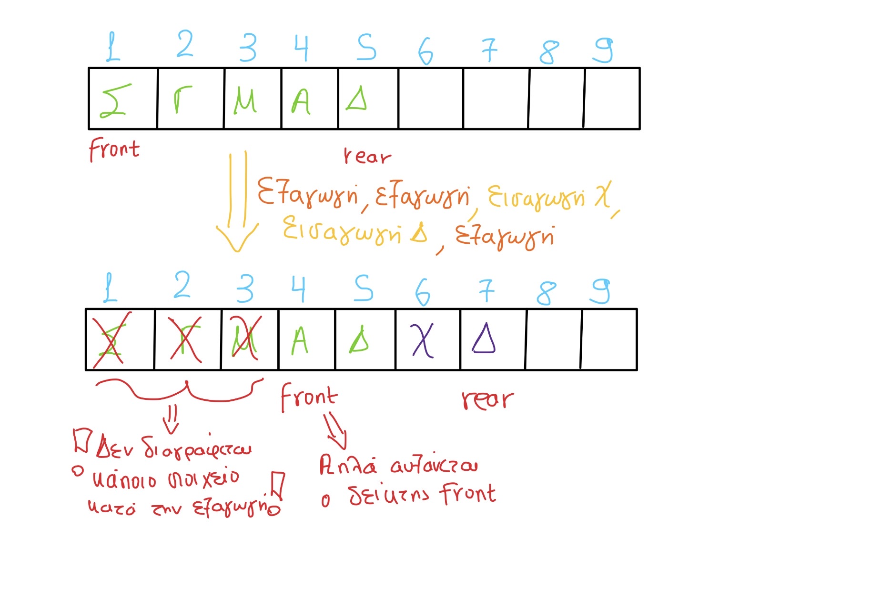

Ουρά (Queue), ονομάζεται μια δομή δεδομένων το σύνολο των στοιχείων της οποίας είναι διατεταγμένο με τέτοιο τρόπο, ώστε τα στοιχεία που τοποθετήθηκαν πρώτα στην ουρά να λαμβάνονται επίσης πρώτα. Η παραπάνω μέθοδος ονομάζεται Πρώτο Μέσα, Πρώτο Έξω ή FIFO (=First In First Out).
Στην παρακάτω εικόνα παρατηρούμε τις διαδικασίες της εισαγωγής και εξαγωγής σε μια ουρά 10 θέσεων με χαρακτήρες.
 Σημείωση: Στην εξαγωγή δεν διαγράφεται το στοιχείο, στην πραγματικότητα δεν γίνεται καμία παρέμβαση στα περιεχόμενα του πίνακα. Απλώς ο δείκτης front δείχνει στην επόμενη θέση.Το παρακάτω τμήμα προγράμματος πραγματοποιεί εισαγωγή στοιχείου σε ουρά με χρήση μονοδιάστατου πίνακα Α, 10 θέσεων.
ΓΡΑΨΕ "Δώσε στοιχείο για εισαγωγή στην ουρά"
ΔΙΑΒΑΣΕ στοιχείο
ΑΝ rear = 10 ΤΟΤΕ
ΓΡΑΨΕ "Γεμάτη ουρά"
ΑΛΛΙΩΣ_ΑΝ (front = 0 KAI rear = 0) ΤΟΤΕ
front <- 1
rear <- 1
A[rear] <- στοιχείο
ΑΛΛΙΩΣ
rear <- rear + 1/p>
A[rear] <- στοιχείο
ΤΕΛΟΣ_ΑΝ
Το παρακάτω τμήμα προγράμματος πραγματοποιεί εξαγωγή στοιχείου από ουρά με χρήση μονοδιάστατου πίνακα Α, 10 θέσεων.
ΑΝ (front = 0 KAI rear = 0) ΤΟΤΕ
ΓΡΑΨΕ "Άδεια ουρά"
ΑΛΛΙΩΣ_ΑΝ (front = rear) ΤΟΤΕ
ΓΡΑΨΕ "Εξάγεται το στοιχείο: ", A[front]
front <- 0
rear <- 0
ΑΛΛΙΩΣ
ΓΡΑΨΕ "Εξάγεται το στοιχείο: ", A[front]
front <- front + 1
ΤΕΛΟΣ_ΑΝ